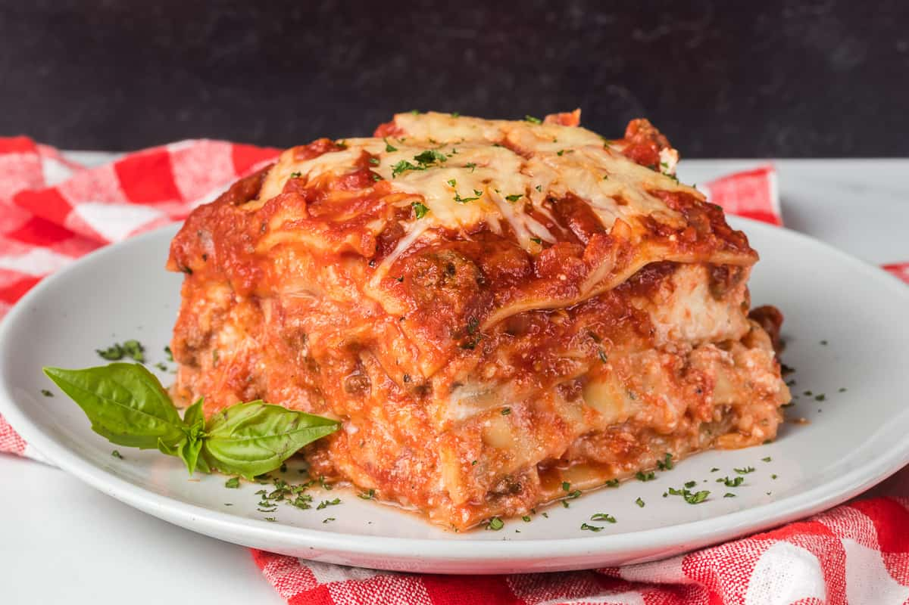

Lasagna

Description
A delicious lasagna made with a meaty sauce and creamy bechemel!
Ingredients
- 1 Onion
- 1 Celery Stock
- 1 Carrot
- Olive Oil
- 1LB Ground Beef
- 1LB Ground Pork (or sausage)
- Salt
- Pepper
- Oregano
- 1c Chicken Stock
- 28oz Crushed Tomatoes (recommend Cento brand)
- 28oz Water
- 1/2c Salted Butter
- 1/4c All Purpose Flour
- 1 3/4c Milk
- 1 pinch Nutmeg
-
2x boxes Oven-Ready Lasagna Pasta Sheets (suggest getting a few
boxes, as how many you’ll use will depend on how much of the
sauces you use in each layer.)
- Mozzarella cheese (1 large block grated)
- Parmesan cheese (grated)
Steps
-
Finely dice 1 whole onion, 1 stock of celery, and 1 medium
carrot, and then chop it even finer in a food processor (carrots
first, then add celery, then add onion). This makes an italian
soffritto.
-
In stock pot, heat olive oil. Once simmering, add your soffritto
and heat for 10 minutes.
-
Once soffritto is heated through, add 1 pound of ground beef and
1 pound of ground pork, season with salt, pepper and oregano.
-
Once meat is cooked through, add 1 cup of chicken stock or white
wine. Simmer for 5 minutes.
-
Add your large can of crushed tomatoes 28oz, and then fill the
empty can with 28oz of filtered water, stir and then bring up to
heat. Simmer for 1 hour minimum. The longer the better.
-
Once sauce has reduced and made beautiful flavors. In a separate
pan heat 1/2 cup of butter until melted, then add 1/4 cup of
flour, cook for 4-5 minutes stirring regularly. Then add two 1
3/4 cups of milk, and heat on low until thickened, add salt,
pepper and nutmeg. Then turn off heat.
-
We use foil baking pans for this part, but casserole dishes work
too. Assemble your lasagna, sauce first, then cheese, then
bechemel, then pasta sheets, then start over until you've filled
the dish.
-
Then heat in the oven covered for 30 minutes, then uncovered for
15, take cool and enjoy.